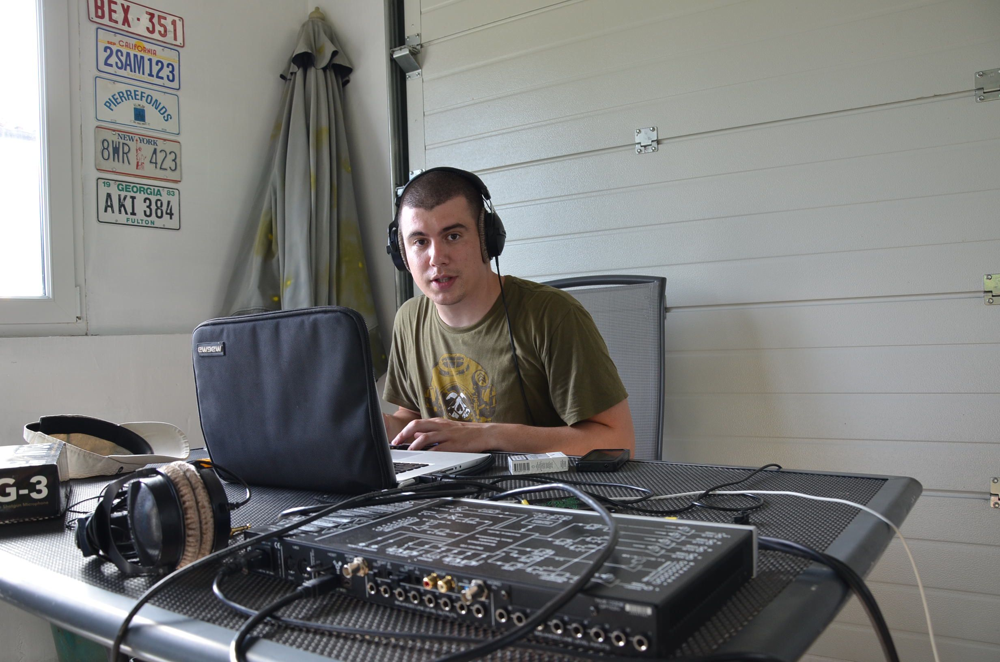
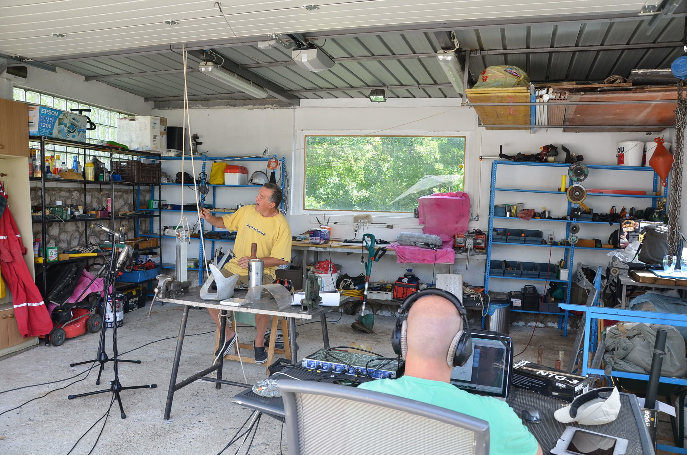
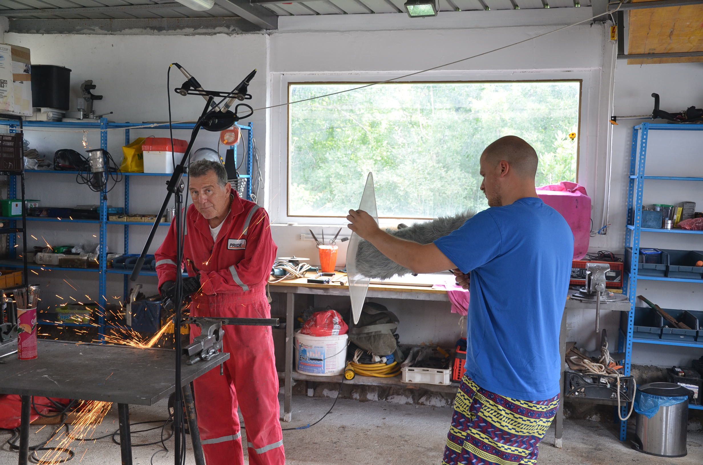
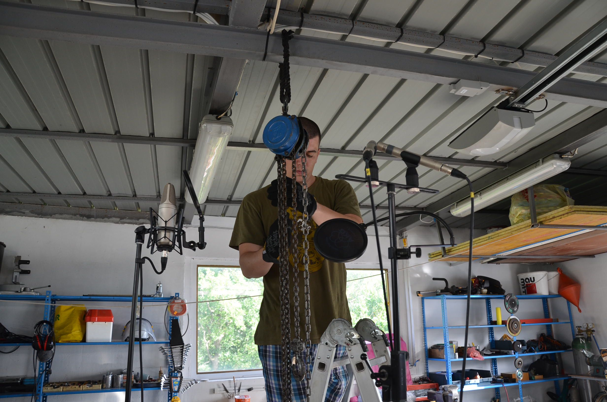
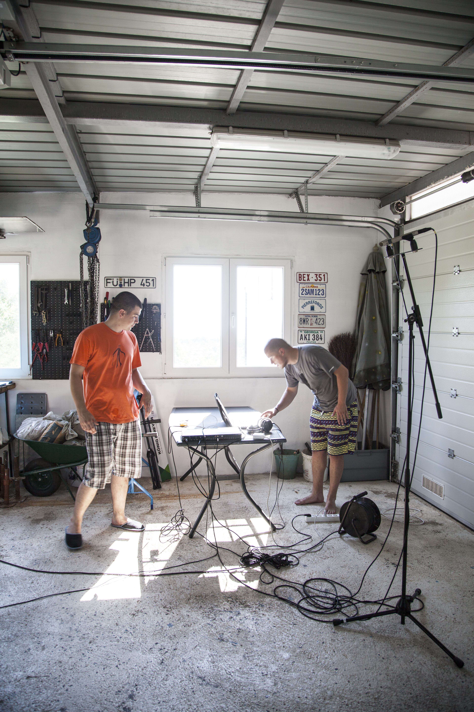
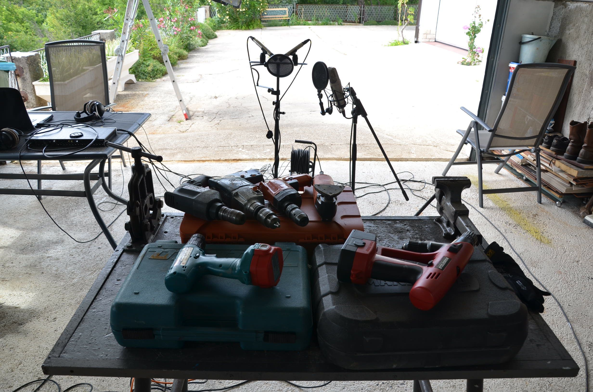

First Sounds
03.02.2026
Most of my studies at SAE in Ljubljana were focused on music production but I always wanted to learn more about sound for video production, particularly video games. For my major project I chose to write about the history of sound design in game production. As a practical part of the project I wanted to question the possibility of me being able to create and publish an independent sound library for free download.

After research I made all the necessary preparations for a three day audio recording which I would do in my house with all the tools available to me. Matko Grgas, one of my supervisors at SAE, agreed to help me and my father Branko Žuvela would join us as well. Doris Fatur came on the last day and took photos for the purposes of the project. I bought my Zoom H6 for this project and we also recorded directly in Logic Pro, with the RODE NT55 stereo pair and a RODE NTG3 shotgun microphone, through an RME babyface.

The main focus was on recording elements for building sound effects and foley sounds, but we tried to capture some ambience sounds and some impulse responses. I had no adequate studio conditions so we recorded in my fathers garage and in the yard in front of my house. This resulted with a lot of nasty reverberation. It was my first time, I knew very little about acoustics but in the process I realised for the first time that capturing quality sounds isn’t easy when you’re working in lousy conditions. Nevertheless, the three day adventure was successful. We captured different sounds of hits, tools, powertools, rattles, screeches, a few ambiences and some impulse responses of the rooms in my house.

This collection offers around 250 sounds which are not great. They have all the problems first recordings should have. They are excellent for learning how not to do things and how to repair them afterwards, because the sounds are usable. You just have to use more processing and have some patience. You can, at the very least, get inspired and create your first sound library. Listen for the problems in my recordings and make something better. I used these sounds in some of my sound design projects, better than that when I published them for the first time, some people downloaded them and used them in their own projects.

In my opinion at that time, we captured everything we possibly could in that garage. Now when I think about it, I could have spent at least a week more and I wouldn’t have picked up everything my fathers tools had to offer. This is a good thing because at one point I will record this sound library in my small studio and with the knowledge I gained in the last decade of working in audio production. So expect a new and improved version in the near future. I had big plans for the website and my career, but I realised nothing would go according to plan. I spent most of my time working and trying to break into the film & TV industry and realised that the website would have to wait. I didn’t think that it would wait for more than a decade.

The sounds were published on the first version of this website back in 2015. The website and its whole visual identity was made by Rebeka Posavec in exchange for me designing sound for her experimental video. I got a better deal in that bargain and to this day I am very grateful for her help. So once again, thanks Rebeka.

Talk to you soon. Bye!